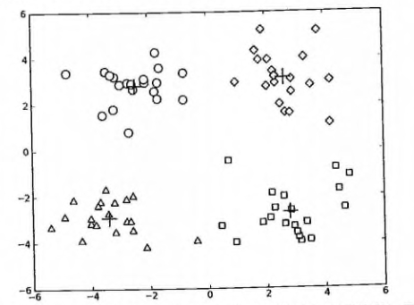

第 10 章 K-Means（K-均值）聚类算法
聚类
聚类，简单来说，就是将一个庞杂数据集中具有相似特征的数据自动归类到一起，称为一个簇，簇内的对象越相似，聚类的效果越好。它是一种无监督的学习(Unsupervised Learning)方法,不需要预先标注好的训练集。聚类与分类最大的区别就是分类的目标事先已知，例如猫狗识别，你在分类之前已经预先知道要将它分为猫、狗两个种类；而在你聚类之前，你对你的目标是未知的，同样以动物为例，对于一个动物集来说，你并不清楚这个数据集内部有多少种类的动物，你能做的只是利用聚类方法将它自动按照特征分为多类，然后人为给出这个聚类结果的定义（即簇识别）。例如，你将一个动物集分为了三簇（类），然后通过观察这三类动物的特征，你为每一个簇起一个名字，如大象、狗、猫等，这就是聚类的基本思想。
至于“相似”这一概念，是利用距离这个评价标准来衡量的，我们通过计算对象与对象之间的距离远近来判断它们是否属于同一类别，即是否是同一个簇。至于距离如何计算，科学家们提出了许多种距离的计算方法，其中欧式距离是最为简单和常用的，除此之外还有曼哈顿距离和余弦相似性距离等。
欧式距离，我想大家再熟悉不过了，但为免有一些基础薄弱的同学，在此再说明一下，它的定义为：
对于x点(坐标为(x1,x2,x3,...,xn))和 y点（坐标为(y1,y2,y3,...,yn)），两者的欧式距离为
在二维平面，它就是我们初中时就学过的两点距离公式

K-Means 算法
K-Means 是发现给定数据集的 K 个簇的聚类算法, 之所以称之为 K-均值 是因为它可以发现 K 个不同的簇, 且每个簇的中心采用簇中所含值的均值计算而成.
簇个数 K 是用户指定的, 每一个簇通过其质心（centroid）, 即簇中所有点的中心来描述.
聚类与分类算法的最大区别在于, 分类的目标类别已知, 而聚类的目标类别是未知的.
优点: 属于无监督学习，无须准备训练集 原理简单，实现起来较为容易 * 结果可解释性较好
缺点: 需手动设置k值。 在算法开始预测之前，我们需要手动设置k值，即估计数据大概的类别个数，不合理的k值会使结果缺乏解释性 可能收敛到局部最小值, 在大规模数据集上收敛较慢 * 对于异常点、离群点敏感
使用数据类型 : 数值型数据
K-Means 场景
kmeans，如前所述，用于数据集内种类属性不明晰，希望能够通过数据挖掘出或自动归类出有相似特点的对象的场景。其商业界的应用场景一般为挖掘出具有相似特点的潜在客户群体以便公司能够重点研究、对症下药。
例如，在2000年和2004年的美国总统大选中，候选人的得票数比较接近或者说非常接近。任一候选人得到的普选票数的最大百分比为50.7%而最小百分比为47.9% 如果1%的选民将手中的选票投向另外的候选人，那么选举结果就会截然不同。 实际上，如果妥善加以引导与吸引，少部分选民就会转换立场。尽管这类选举者占的比例较低，但当候选人的选票接近时，这些人的立场无疑会对选举结果产生非常大的影响。如何找出这类选民，以及如何在有限的预算下采取措施来吸引他们？ 答案就是聚类（Clustering)。
那么，具体如何实施呢？首先，收集用户的信息，可以同时收集用户满意或不满意的信息，这是因为任何对用户重要的内容都可能影响用户的投票结果。然后，将这些信息输入到某个聚类算法中。接着，对聚类结果中的每一个簇（最好选择最大簇 ）， 精心构造能够吸引该簇选民的消息。最后， 开展竞选活动并观察上述做法是否有效。
另一个例子就是产品部门的市场调研了。为了更好的了解自己的用户，产品部门可以采用聚类的方法得到不同特征的用户群体，然后针对不同的用户群体可以对症下药，为他们提供更加精准有效的服务。
K-Means 术语
- 簇: 所有数据的点集合，簇中的对象是相似的。
- 质心: 簇中所有点的中心（计算所有点的均值而来）.
- SSE: Sum of Sqared Error（误差平方和）, 它被用来评估模型的好坏，SSE 值越小，表示越接近它们的质心. 聚类效果越好。由于对误差取了平方，因此更加注重那些远离中心的点（一般为边界点或离群点）。详情见kmeans的评价标准。
有关 簇 和 质心 术语更形象的介绍, 请参考下图:

K-Means 工作流程
- 首先, 随机确定 K 个初始点作为质心（不必是数据中的点）。
- 然后将数据集中的每个点分配到一个簇中, 具体来讲, 就是为每个点找到距其最近的质心, 并将其分配该质心所对应的簇. 这一步完成之后, 每个簇的质心更新为该簇所有点的平均值. 3.重复上述过程直到数据集中的所有点都距离它所对应的质心最近时结束。
上述过程的 伪代码 如下:
- 创建 k 个点作为起始质心（通常是随机选择）
- 当任意一个点的簇分配结果发生改变时（不改变时算法结束）
- 对数据集中的每个数据点
- 对每个质心
- 计算质心与数据点之间的距离
- 将数据点分配到距其最近的簇
- 对每个质心
- 对每一个簇, 计算簇中所有点的均值并将均值作为质心
- 对数据集中的每个数据点
K-Means 开发流程
收集数据：使用任意方法
准备数据：需要数值型数据类计算距离, 也可以将标称型数据映射为二值型数据再用于距离计算
分析数据：使用任意方法
训练算法：不适用于无监督学习，即无监督学习不需要训练步骤
测试算法：应用聚类算法、观察结果.可以使用量化的误差指标如误差平方和（后面会介绍）来评价算法的结果.
使用算法：可以用于所希望的任何应用.通常情况下, 簇质心可以代表整个簇的数据来做出决策.
K-Means 的评价标准
k-means算法因为手动选取k值和初始化随机质心的缘故，每一次的结果不会完全一样，而且由于手动选取k值，我们需要知道我们选取的k值是否合理，聚类效果好不好，那么如何来评价某一次的聚类效果呢？也许将它们画在图上直接观察是最好的办法，但现实是，我们的数据不会仅仅只有两个特征，一般来说都有十几个特征，而观察十几维的空间对我们来说是一个无法完成的任务。因此，我们需要一个公式来帮助我们判断聚类的性能，这个公式就是SSE (Sum of Squared Error, 误差平方和 ），它其实就是每一个点到其簇内质心的距离的平方值的总和，这个数值对应kmeans函数中clusterAssment矩阵的第一列之和。 SSE值越小表示数据点越接近于它们的质心，聚类效果也越好。 因为对误差取了平方，因此更加重视那些远离中心的点。一种肯定可以降低SSE值的方法是增加簇的个数，但这违背了聚类的目标。聚类的目标是在保持簇数目不变的情况下提高簇的质量。
K-Means 聚类算法函数
从文件加载数据集
# 从文本中构建矩阵，加载文本文件，然后处理
def loadDataSet(fileName): # 通用函数，用来解析以 tab 键分隔的 floats（浮点数），例如: 1.658985 4.285136
dataMat = []
fr = open(fileName)
for line in fr.readlines():
curLine = line.strip().split('\t')
fltLine = map(float,curLine) # 映射所有的元素为 float（浮点数）类型
dataMat.append(fltLine)
return dataMat
计算两个向量的欧氏距离
# 计算两个向量的欧式距离（可根据场景选择其他距离公式）
def distEclud(vecA, vecB):
return sqrt(sum(power(vecA - vecB, 2))) # la.norm(vecA-vecB)
构建一个包含 K 个随机质心的集合
# 为给定数据集构建一个包含 k 个随机质心的集合。随机质心必须要在整个数据集的边界之内，这可以通过找到数据集每一维的最小和最大值来完成。然后生成 0~1.0 之间的随机数并通过取值范围和最小值，以便确保随机点在数据的边界之内。
def randCent(dataSet, k):
n = shape(dataSet)[1] # 列的数量，即数据的特征个数
centroids = mat(zeros((k,n))) # 创建k个质心矩阵
for j in range(n): # 创建随机簇质心，并且在每一维的边界内
minJ = min(dataSet[:,j]) # 最小值
rangeJ = float(max(dataSet[:,j]) - minJ) # 范围 = 最大值 - 最小值
centroids[:,j] = mat(minJ + rangeJ * random.rand(k,1)) # 随机生成，mat为numpy函数，需要在最开始写上 from numpy import *
return centroids
K-Means 聚类算法
# k-means 聚类算法
# 该算法会创建k个质心，然后将每个点分配到最近的质心，再重新计算质心。
# 这个过程重复数次，直到数据点的簇分配结果不再改变位置。
# 运行结果（多次运行结果可能会不一样，可以试试，原因为随机质心的影响，但总的结果是对的， 因为数据足够相似，也可能会陷入局部最小值）
def kMeans(dataSet, k, distMeas=distEclud, createCent=randCent):
m = shape(dataSet)[0] # 行数，即数据个数
clusterAssment = mat(zeros((m, 2))) # 创建一个与 dataSet 行数一样，但是有两列的矩阵，用来保存簇分配结果
centroids = createCent(dataSet, k) # 创建质心，随机k个质心
clusterChanged = True
while clusterChanged:
clusterChanged = False
for i in range(m): # 循环每一个数据点并分配到最近的质心中去
minDist = inf; minIndex = -1
for j in range(k):
distJI = distMeas(centroids[j,:],dataSet[i,:]) # 计算数据点到质心的距离
if distJI < minDist: # 如果距离比 minDist（最小距离）还小，更新 minDist（最小距离）和最小质心的 index（索引）
minDist = distJI; minIndex = j
if clusterAssment[i, 0] != minIndex: # 簇分配结果改变
clusterChanged = True # 簇改变
clusterAssment[i, :] = minIndex,minDist**2 # 更新簇分配结果为最小质心的 index（索引），minDist（最小距离）的平方
print centroids
for cent in range(k): # 更新质心
ptsInClust = dataSet[nonzero(clusterAssment[:, 0].A==cent)[0]] # 获取该簇中的所有点
centroids[cent,:] = mean(ptsInClust, axis=0) # 将质心修改为簇中所有点的平均值，mean 就是求平均值的
return centroids, clusterAssment
测试函数
- 测试一下以上的基础函数是否可以如预期运行, 请看: https://github.com/apachecn/AiLearning/blob/master/src/py2.x/ml/10.kmeans/kMeans.py
- 测试一下 kMeans 函数是否可以如预期运行, 请看: https://github.com/apachecn/AiLearning/blob/master/src/py2.x/ml/10.kmeans/kMeans.py
参考运行结果如下:

K-Means 聚类算法的缺陷
在 kMeans 的函数测试中，可能偶尔会陷入局部最小值（局部最优的结果，但不是全局最优的结果）.
局部最小值的的情况如下:
 出现这个问题有很多原因，可能是k值取的不合适，可能是距离函数不合适，可能是最初随机选取的质心靠的太近，也可能是数据本身分布的问题。
出现这个问题有很多原因，可能是k值取的不合适，可能是距离函数不合适，可能是最初随机选取的质心靠的太近，也可能是数据本身分布的问题。
为了解决这个问题，我们可以对生成的簇进行后处理，一种方法是将具有最大SSE值的簇划分成两个簇。具体实现时可以将最大簇包含的点过滤出来并在这些点上运行K-均值算法，令k设为2。
为了保持簇总数不变，可以将某两个簇进行合并。从上图中很明显就可以看出，应该将上图下部两个出错的簇质心进行合并。那么问题来了，我们可以很容易对二维数据上的聚类进行可视化， 但是如果遇到40维的数据应该如何去做？
有两种可以量化的办法：合并最近的质心，或者合并两个使得SSE增幅最小的质心。 第一种思路通过计算所有质心之间的距离， 然后合并距离最近的两个点来实现。第二种方法需要合并两个簇然后计算总SSE值。必须在所有可能的两个簇上重复上述处理过程，直到找到合并最佳的两个簇为止。
因为上述后处理过程实在是有些繁琐，所以有更厉害的大佬提出了另一个称之为二分K-均值（bisecting K-Means）的算法.
二分 K-Means 聚类算法
该算法首先将所有点作为一个簇，然后将该簇一分为二。
之后选择其中一个簇继续进行划分，选择哪一个簇进行划分取决于对其划分时候可以最大程度降低 SSE（平方和误差）的值。
上述基于 SSE 的划分过程不断重复，直到得到用户指定的簇数目为止。
二分 K-Means 聚类算法伪代码
- 将所有点看成一个簇
- 当簇数目小于 k 时
- 对于每一个簇
- 计算总误差
- 在给定的簇上面进行 KMeans 聚类（k=2）
- 计算将该簇一分为二之后的总误差
- 选择使得误差最小的那个簇进行划分操作
另一种做法是选择 SSE 最大的簇进行划分，直到簇数目达到用户指定的数目位置。 接下来主要介绍该做法的python2代码实现
二分 K-Means 聚类算法代码
# 二分 KMeans 聚类算法, 基于 kMeans 基础之上的优化，以避免陷入局部最小值
def biKMeans(dataSet, k, distMeas=distEclud):
m = shape(dataSet)[0]
clusterAssment = mat(zeros((m,2))) # 保存每个数据点的簇分配结果和平方误差
centroid0 = mean(dataSet, axis=0).tolist()[0] # 质心初始化为所有数据点的均值
centList =[centroid0] # 初始化只有 1 个质心的 list
for j in range(m): # 计算所有数据点到初始质心的距离平方误差
clusterAssment[j,1] = distMeas(mat(centroid0), dataSet[j,:])**2
while (len(centList) < k): # 当质心数量小于 k 时
lowestSSE = inf
for i in range(len(centList)): # 对每一个质心
ptsInCurrCluster = dataSet[nonzero(clusterAssment[:,0].A==i)[0],:] # 获取当前簇 i 下的所有数据点
centroidMat, splitClustAss = kMeans(ptsInCurrCluster, 2, distMeas) # 将当前簇 i 进行二分 kMeans 处理
sseSplit = sum(splitClustAss[:,1]) # 将二分 kMeans 结果中的平方和的距离进行求和
sseNotSplit = sum(clusterAssment[nonzero(clusterAssment[:,0].A!=i)[0],1]) # 将未参与二分 kMeans 分配结果中的平方和的距离进行求和
print "sseSplit, and notSplit: ",sseSplit,sseNotSplit
if (sseSplit + sseNotSplit) < lowestSSE: # 总的（未拆分和已拆分）误差和越小，越相似，效果越优化，划分的结果更好（注意：这里的理解很重要，不明白的地方可以和我们一起讨论）
bestCentToSplit = i
bestNewCents = centroidMat
bestClustAss = splitClustAss.copy()
lowestSSE = sseSplit + sseNotSplit
# 找出最好的簇分配结果
bestClustAss[nonzero(bestClustAss[:,0].A == 1)[0],0] = len(centList) # 调用二分 kMeans 的结果，默认簇是 0,1. 当然也可以改成其它的数字
bestClustAss[nonzero(bestClustAss[:,0].A == 0)[0],0] = bestCentToSplit # 更新为最佳质心
print 'the bestCentToSplit is: ',bestCentToSplit
print 'the len of bestClustAss is: ', len(bestClustAss)
# 更新质心列表
centList[bestCentToSplit] = bestNewCents[0,:].tolist()[0] # 更新原质心 list 中的第 i 个质心为使用二分 kMeans 后 bestNewCents 的第一个质心
centList.append(bestNewCents[1,:].tolist()[0]) # 添加 bestNewCents 的第二个质心
clusterAssment[nonzero(clusterAssment[:,0].A == bestCentToSplit)[0],:]= bestClustAss # 重新分配最好簇下的数据（质心）以及SSE
return mat(centList), clusterAssment
测试二分 KMeans 聚类算法
- 测试一下二分 KMeans 聚类算法，请看: https://github.com/apachecn/AiLearning/blob/master/src/py2.x/ml/10.kmeans/kMeans.py
上述函数可以运行多次，聚类会收敛到全局最小值，而原始的 kMeans() 函数偶尔会陷入局部最小值。
运行参考结果如下:

- 作者：那伊抹微笑, 清都江水郎
- GitHub地址: https://github.com/apachecn/AiLearning
- 版权声明：欢迎转载学习 => 请标注信息来源于 ApacheCN